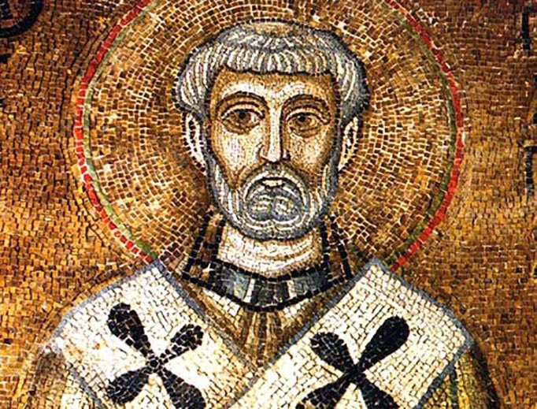

St. Clement
St. Clement I (c. 90-c. 99)—sometimes called Clement of Rome to distinguish him from Clement of Alexandria—is the first of the early writers called "Apostolic Fathers." Concerning this pope little is known for certain. In his letter to the Church of Corinth—still preserved, and unquestionably authentic—he reproaches the Corinthians for having allowed a schism to exist in their church, and urges them to submit to the divinely established hierarchy, to which all Christians owe obedience.
McSorley, Joseph. An Outline History of the Church by Centuries (from St. Peter to Pius XII). 2nd Ed. 1944.